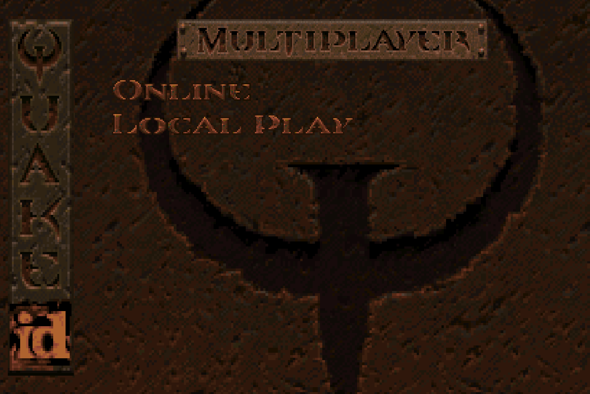
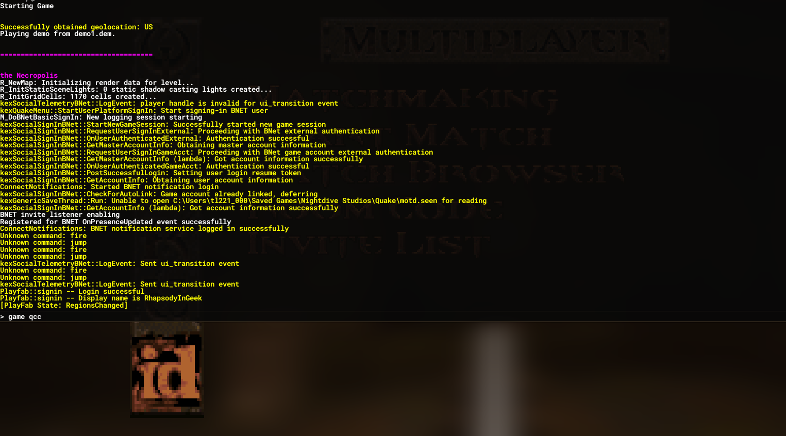
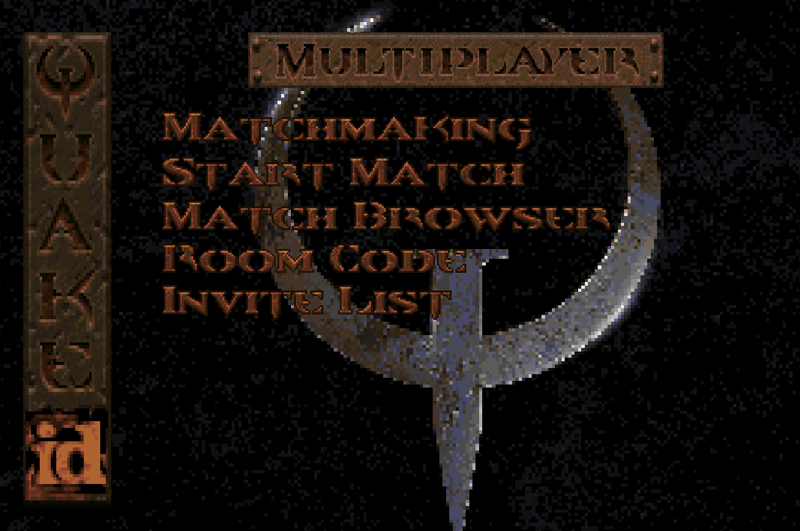
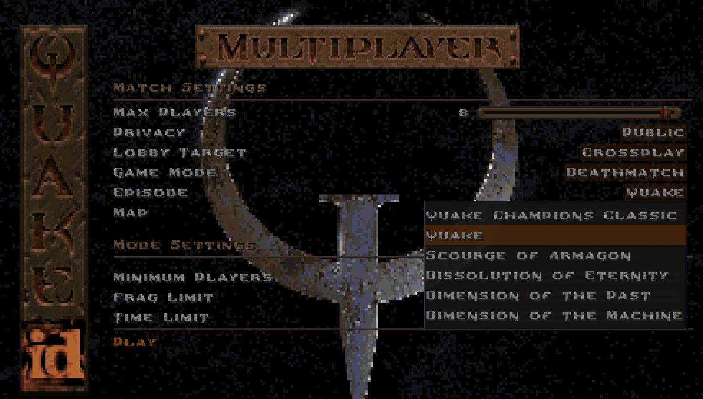

Multiplayer
Hosting A Match
To play multiplayer with the Nightdive Remaster, you'll need to follow the following steps:

Pick either Online or Local Player. Once you are in either menu...


... open the Console and enter the command game qcc.

If all goes well your screen should look like this:
 
You should be all set to change your server settings and start the match!
NOTE: To select a map, you'll need to choose the appropriate episode. Don't worry! This will not deactivate the mod thanks to the mapdb.json configuration.

Joining A Match
To join a server running Quake Champions Classic in the Nightdive Remaster, you need only to have the mod correctly installed. Joining any server will automatically activate the mod.
For other engines, follow their instructions. It is typically enough to activate the mod with the console command game qcc and then host / join a game as normal.